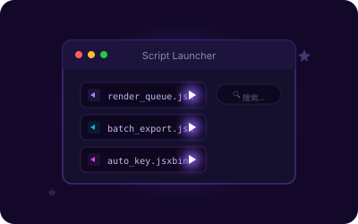

📁 项目整理器
按预设规则自动分类素材（图片、视频、音频、PSD、3D 等）。支持自定义多方案与嵌套文件夹结构，整理完成后自动清除空文件夹。
- 智能识别媒体类型
- 自定义整理方案
- 自动清理空目录
三大模块覆盖素材管理、代码复用与工作流加速
按预设规则自动分类素材（图片、视频、音频、PSD、3D 等）。支持自定义多方案与嵌套文件夹结构，整理完成后自动清除空文件夹。
批量应用或移除 After Effects 表达式，内置示例库。支持用户自定义表达式收藏、搜索与编辑，操作前确认覆盖或删除。

浏览并运行本地 .jsx / .jsxbin 脚本文件。支持收藏夹、实时搜索过滤、仅显示收藏项，并自动关联显示 PNG 图标。
纯 ExtendScript / JavaScript 实现，离线运行，无任何外部依赖
清晰的模块化目录，便于扩展与二次开发
四步完成安装，即刻开始使用
从 GitHub Releases 下载最新版本，将所有文件解压到名为 AeLocalToolkit/ 的文件夹中。
将 AeLocalToolkit/ 文件夹复制到系统 CEP 扩展目录：
# Windows
C:\Program Files (x86)\Common Files\Adobe\CEP\extensions\
# macOS
/Library/Application Support/Adobe/CEP/extensions/打开 After Effects 2020 或更高版本：
中文：编辑 → 首选项 → 脚本与表达式 → 勾选「允许脚本写入文件和访问网络」
English：Edit → Preferences → Scripting & Expressions → Check "Allow Scripts to Write Files and Access Network"
💡 工具完全离线运行，此权限仅用于本地文件读写。
重启 After Effects 后，通过菜单路径打开面板：
窗口(W) → 扩展 → AeLocalToolkit